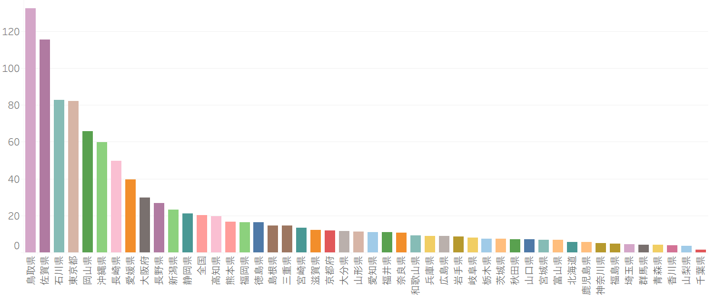
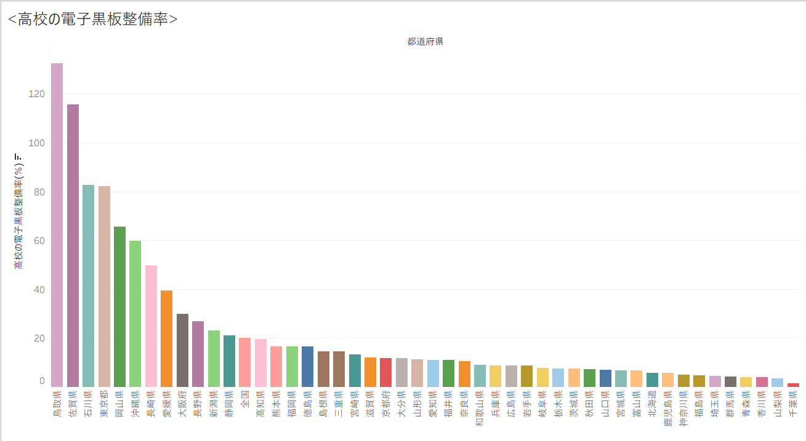

都道府県別普通教室の電子黒板整備率
さまざまな場所で電子化が進んでいる中で、小中高の電子黒板整備率に着目した。今回は比較して見ていこうと思う。
普通教室の電子黒板整備率
これは2017年度に調査された「普通教室の電子黒板整備率[%]」である。
1.小学校
ここに小学校の普通教室の電子黒板整備率を示す。
2.中学校
ここに中学校の普通教室の電子黒板整備率を示す。

この図より、最も高いのが鳥取県、最も低いのが千葉県であるとわかる。
3.高校
ここに高校の普通教室の電子黒板整備率を示す。
